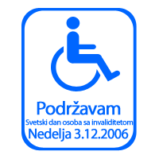

3. decembar
Treći decembar je Svetski dan osoba sa invaliditetom. Ove godine Dan za temu ima Digitalnu pristupačnost.
Poruka Kofi Anana skreće pažnju na potrebu da internet učinimo dostupnim svima.
The theme of this year’s observance of the International Day of Disabled Persons, “E-accessibility”, reminds us of the need to make the Internet available to everyone.
This is a welcome change. As information and communication technologies spread across the world, drawing in more and more users every day, most websites remained inaccessible to the millions of people who have difficulty manipulating a mouse, or who are visually impaired and need a “screen reader” or large fonts to read the page. Slowly, Governments and the private sector have been recognizing the economic and social benefits of making websites fully accessible, and have been putting in place changes involving software and hardware alike.
The Convention on the Rights of Persons with Disabilities, which is expected to be approved by the General Assembly later this month, can give additional impetus to this trend. States that choose to become party to the Convention will thereby commit themselves to taking steps to provide “information intended for the general public to persons with disabilities in accessible formats and technologies appropriate to different kinds of disabilities in a timely manner and without additional cost”. The Convention urges private businesses and mass media to do the same with their services.
On this International Day, let us pledge again to do our utmost to achieve the vision of an inclusive, people-centred, development-oriented information society. And let us redouble our efforts to ensure that persons with disabilities can exercise their human rights and play their full part in the economic, social and political lives of their societies.
Najmanje što mi na yahti.ci možemo da učinimo je da svoj web-sajt prilagodimo standardu koji garantuje upotrebljivost i osobama koje ne mogu same da čitaju jer slabo ili uopšte ne vide (pa koriste screen readere ili uvećan tekst i pojačan kontrast), ili da pomoću miša imaju kontrolu nad web stranicom, na primer.
Trenuto ovaj sajt nije u potpunosti prilagođen takvim potrebama, i mi se obavezujemo da ćemo u narednom periodu raditi na unapređenju pristupačnosti.
Pridružujemo se na ovaj način inicijativi koju je pokrenuo Blogowski. Želimo i da skrenemo pažnju na problem koji postoji svuda oko nas. Kada bi svako - u okviru svoje profesije, hobija, posla kojim se bavi - razmislio šta je to što može da uradi da bi se smanjili problemi sa kojima se osobe sa invaliditetom suočavaju... Šta na primer može da uradi arhitekta - da nikad više ne isprojektuje trg sa nepotrebnim denivelacijama (that's me). Web dizajner - da ne zakucava veličinu fonta, stručnjak za osvetljenje - da proračunava osvetljaj i prema potrebama visualy impaired people, medijski analitičar - da napravi analizu pisanja štampe o ovom problemu u poslednjih godinu dana...
Dopišite sami, makar i najmanju stvar, koju biste mogli da uradite.
Komentari
la lara | 03.12.06 13:05
 RSS feed
RSS feed
 sadržaji se objavljuju pod
sadržaji se objavljuju pod
Nekolicina dragih mi ljudi (enologa, istoričara umetnosti, umetnika...) je osnovala centar centar, kom sam se svečano pridružila pre mesec dana. Udruženje za rad sa hendikepiranima u kulturi i umetnosti. Večeras će se u glavnom nam gradu održati izložba povodom dana invalida, u muzeju primenjene. U pripremi su još gomile radionica i izložbi namenjene ovim ljudima.
Sopstvenu u februaru ću postaviti isto tako u istom prostoru, da ljudi sa invaliditetom mogu da dođu, da opipaju platna, da se slepima obezbede audio zapisi, kao i neke radionice posle.
Eto.
etotako | 03.12.06 12:50